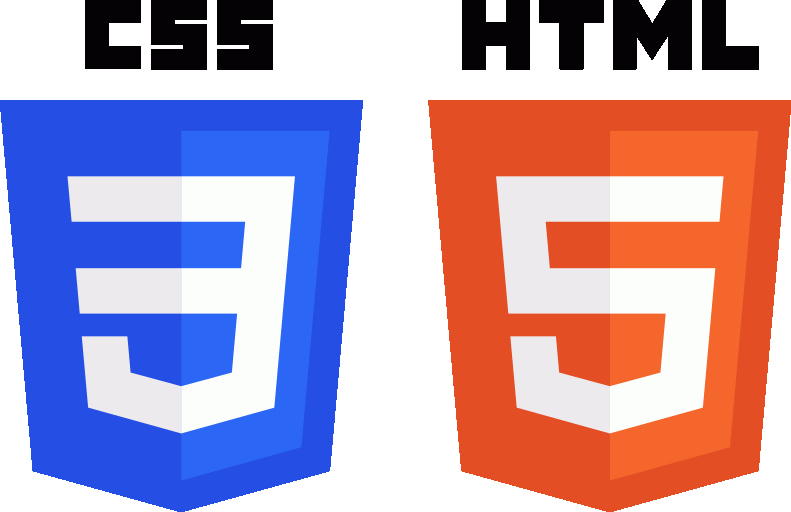
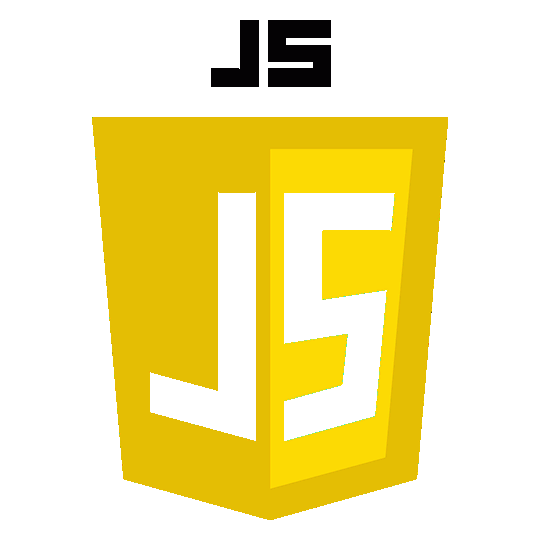
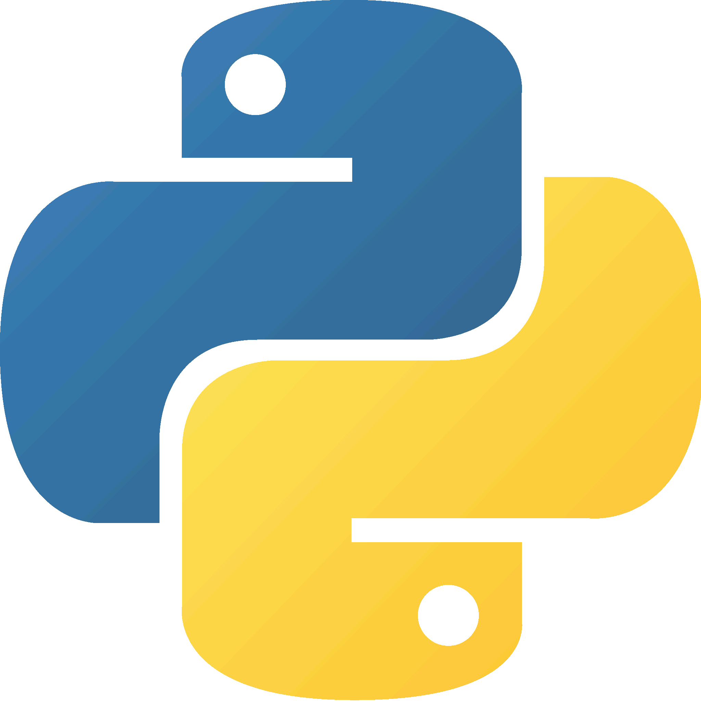
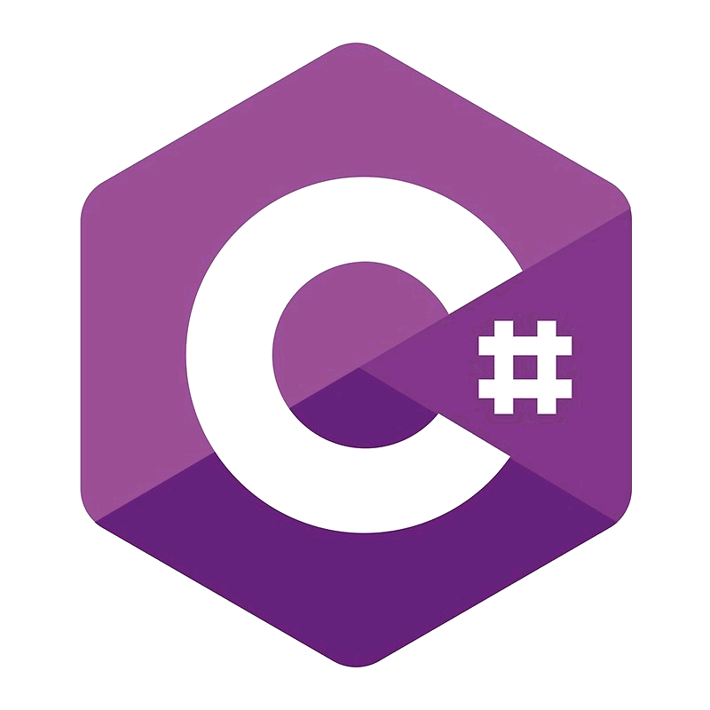
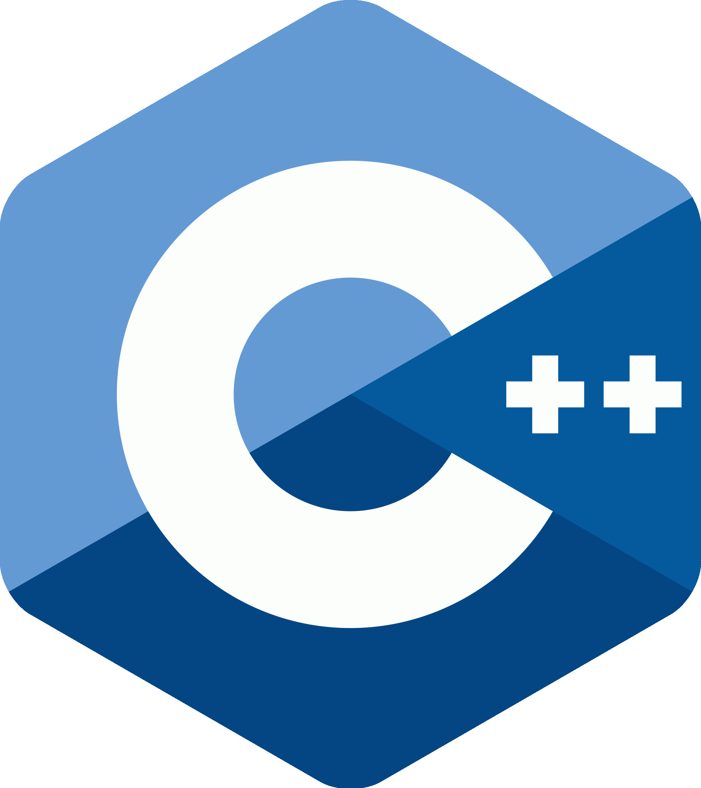

This is my path, my road to videogame development
I've decided to start with HTML/CSS since I read that it was necessary to learn javascript. After I'm done with javascript, I'll learn some python, which I think might be very useful in the future. Once I have acquired all that, I will take a C# course, and then I'll take the videogame development course at Coderhouse, which is oriented towards unity development. Once all that is done I'll probably start making some games of my own, I already have some ideas.However, Once you become a student you never stop being a student, so I'll probably learn more languages, learn to use more tools as it becomes necessary over time. I'll probably learn some C++ too to start working with Unreal engine.






